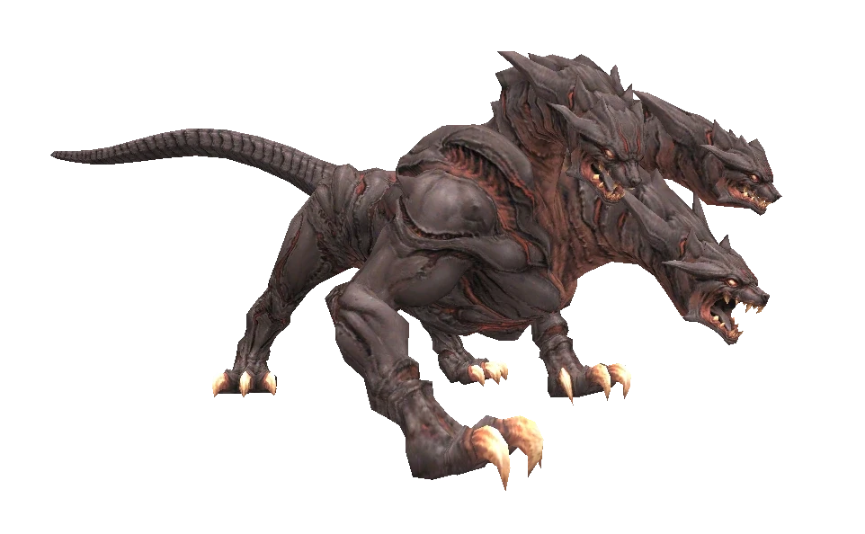

Level 75 reference · Zenith rules
|
Cerberus
 Image source |
Family Information
|


Special Attacks
| Special Abilities | Aht Urhgan Areas | |||
| Ululation - 20' AoE Paralyze effect. | ||||
| Magma Shield - Stoneskin and Blaze Spikes effect. (Can not be dispelled) | ||||
| Sulfurous Breath - Strong Breath Attack, blinkable | ||||
| Lava Spit - Small AoE ~400 damage, ignores shadows | ||||
| Scorching Lash - Strong AoE physical damage. Blinkable; only used when someone behind him has hate | ||||
| Gates of Hades - 20' AoE damage and 20hp/tick Burn, only used below 25% HP. ~3 second charge time, stunnable. | ||||
| Note: Notorious Monsters in this family may use all of the above and/or additional unique special abilities. | ||||
Notorious Monsters in Family
| Name | Spawn Information | Level | Zone | Notable Drop(s) |
|---|---|---|---|---|
| Cerberus | Timed Spawn Respawn time is 48 to 72 hours after death. During this period, spawn chances occur in one hour intervals. | 85 | Mount Zhayolm | Algol |
|
Quest NMs: None Mission NMs: Black Shuck (Assault - Better Than One) Battlefield NMs: None Besieged NMs: Gere | ||||
Adapted from Eden Wiki: Category:Cerberus · Contributors and history · CC BY-SA 4.0. Revision 34756. Layout, links and optional background text adapted for Zenith.